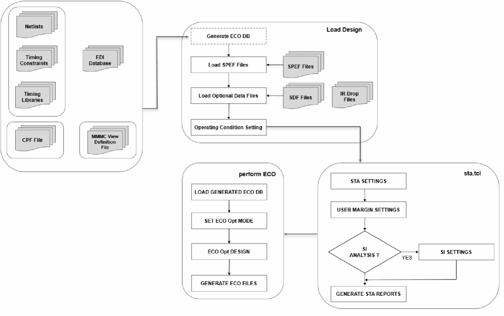
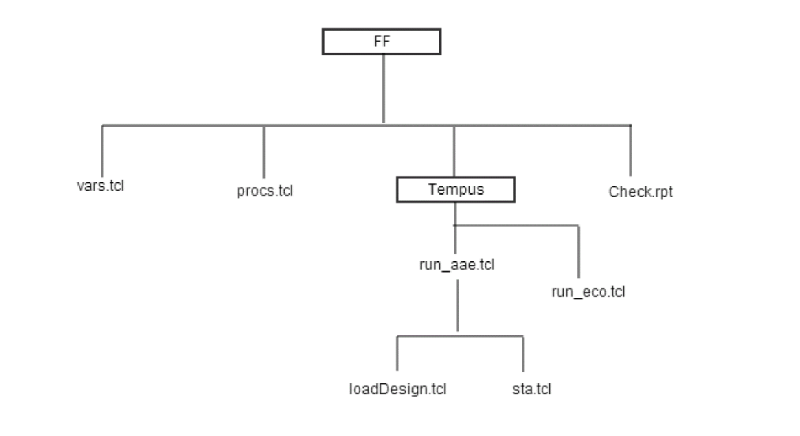

Running ECO Fixing Using Foundation Flow
Tempus Foundation Flow supports the Hold ECO fixing. This is an additional step after the MMMC timing analysis, which Tempus offers to back-end designers for quick final timing closure during the Signoff stage. There are two ways to run hold ECO fixing after the timing analysis:
- Do not exit the session and perform ECO fixing, or
- Save an ECO database and exit the current session; ECO fixing is performed in a new session with previously generated DB.
For better flexibility, it is recommended that you use the second option.
Before You Begin
No additional input files are required to perform ECO fixing after timing analysis.
Flow Chart
The figure below illustrates the ECO fixing flow.

Sample of Generated Code
When you switch on the ECO control variable in the setup.tcl file, a run_eco.tcl script will be created under the FF/Tempus directory, for example:
set vars(eco_fix) "true" ;
The run_aae.tcl file is divided into two scripts, namely loadDesign.tcl and sta.tcl.
Figure -2 FF Directory Structure

Sample Code of Generated run_eco.tcl
To enable eco fixing, set vars(eco_fix) to "true". By default, vars(eco_buffers) is set to an empty list and ECO target is set to hold in the setup.tcl templates. The tool will pick the best buffers from the entire library sets to perform eco fixing. The generated code is presented below:
s ource FF/vars.tcl
source FF/procs.tcl
source FF/TEMPUS/loadDesign.tcl
source FF/TEMPUS/sta.tcl
set_eco_opt_mode -load_eco_opt_db ecoTimingDB
set_eco_opt_mode -verbose true \
-buffer_cell_list { }
eco_opt_design -hold
You can also provide a list of buffers using vars(eco_buffers), for example:
set vars(eco_buffers) "BUF_X8 BUF_X1 BUF_X2 BUF_X4 BUF_X16 BUF_X32"
The generated set_eco_opt_mode command will contain this information, for example:
set_eco_opt_mode -verbose true \
-buffer_cell_list {BUF_X8 BUF_X1 BUF_X2 BUF_X4 BUF_X16 BUF_X32}
ECO target can be changed to "setup", "drv", or "leakage" using vars(eco_targets). For example:
The generated eco_opt_design command is shown below:
eco_opt_design -setup
Signoff ECO allows incremental ECO in the same session. When you set "hold drv setup" to vars(eco_targets), the generated code is shown as follows:
set_eco_opt_mode -allow_multiple_incremental true
eco_opt_design -hold
eco_opt_design -drv
eco_opt_design -setup
Sample of Predefined Code
The generated code only has valid Tempus commands based on the input settings of setup.tcl. Whereas, the predefined code contains all set of Tempus commands used in different analysis, but with control embedded. For example, the sample code of generated run_eco.tcl is shown below.
source $vars(script_root)/ETC/TEMPUS/loadDesign.tcl
source $vars(script_root)/ETC/TEMPUS/sta.tcl
::FF_TEMPUS::source_plug tempus_pre_eco
if {[info exists vars(tempus_replace_eco)]} {
::FF_TEMPUS::source_plug tempus_replace_eco
} else {
set_eco_opt_mode -verbose true -resize_inst true -optimize_sequential_cells true -swap_inst true -buffer_cell_list $vars(eco_buffers)
set_eco_opt_mode -load_eco_opt_db ecoTimingDB
if { [llength $vars(eco_targets)] > 1 } { set_eco_opt_mode -allow_multiple_incremental true }
set i 0
foreach target $vars(eco_targets) {
eco_opt_design -$target
incr i
}
}
::FF_TEMPUS::source_plug tempus_post_eco
Return to top